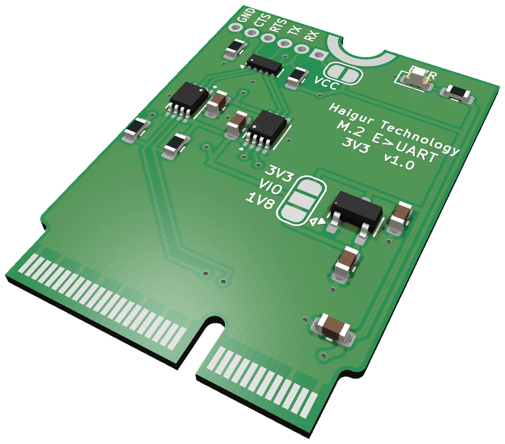
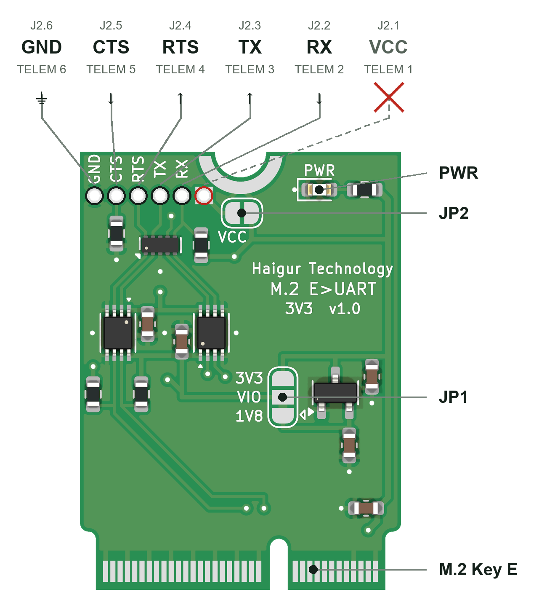

M.2 Key E → UART 3.3 V · Jetson OrinM.2 Key E → UART 3,3 В · Jetson Orin
The Jetson's spare UART, wired straight to your flight controllerВільний UART Jetson — просто до польотного контролера
An M.2 2230 card for the Key E slot of the Jetson Orin Nano / Orin NX developer kit. It turns the slot's 1.8 V UART into 3.3 V with RTS/CTS and ends in pads numbered like a Pixhawk TELEM port, pin for pin. No USB adapter dangling off the Jetson. Карта M.2 2230 для слота Key E плати розробника Jetson Orin Nano / Orin NX. Вона перетворює UART слота з 1,8 В на 3,3 В з RTS/CTS і закінчується площадками, пронумерованими як порт TELEM Pixhawk, контакт у контакт. Жодного USB-адаптера, що бовтається на Jetson.
- M.2 2230 Key E
- UART · RTS/CTS
- 1.8 → 3.3 V
- Jetson P3768

The cardКарта
A native UART where the Wi-Fi card used to beСправжній UART на місці карти Wi-Fi
The developer kit routes a UART to its M.2 Key E slot at 1.8 V and disables it by default. This card takes the slot, shifts the levels to 3.3 V and brings TX, RX, RTS, CTS and GND out to six solder pads at the screw end.Плата розробника виводить UART на слот M.2 Key E на рівні 1,8 В і за замовчуванням його вимикає. Ця карта займає слот, перетворює рівні на 3,3 В і виводить TX, RX, RTS, CTS і GND на шість площадок біля гвинта.

On the cardНа карті
- Two SN74LVC2T45 level translators, one per direction, so nothing on the card has to guess which way a signal goes.Два перетворювачі рівнів SN74LVC2T45, по одному на напрямок, тож нічому на карті не доводиться вгадувати, куди йде сигнал.
- Its own 1.8 V regulator for the Jetson side: the M.2 Key E slot supplies only 3.3 V.Власний стабілізатор 1,8 В для боку Jetson: слот M.2 Key E дає лише 3,3 В.
- TPD4E05U06 ESD protection, 0.5 pF, on all four signals that leave the card.Захист від ESD TPD4E05U06, 0,5 пФ, на всіх чотирьох сигналах, що виходять з карти.
- Pull resistors keep every line at a defined level with the UART disabled or the cable unplugged. Without RTS/CTS wires, CTS reads "clear to send", so flow control never blocks.Резистори тримають кожну лінію на визначеному рівні, коли UART вимкнено або кабель від'єднано. Без дротів RTS/CTS лінія CTS означає «можна передавати», тож керування потоком ніколи не блокує.
- With the Jetson off, the pads go high-impedance: a powered flight controller sees open lines.Коли Jetson вимкнено, площадки переходять у високоімпедансний стан: увімкнений польотний контролер бачить розімкнені лінії.
- Parts on the top side only, up to 1.2 mm high, and a red PWR LED that lights when the slot has power.Компоненти лише згори, висотою до 1,2 мм, і червоний світлодіод PWR, що світиться, коли на слоті є живлення.
v1.0: leave JP1 and JP2 as shippedv1.0: не змінюйте JP1 і JP2
JP1 (3V3 / VIO / 1V8, next to the regulator) is set to 1V8 by a copper link under the solder mask, so it looks open. Do not solder anything on it: a bridge between its top and middle pads would put 3.3 V on the Jetson's 1.8 V UART pins.JP1 (3V3 / VIO / 1V8, біля стабілізатора) встановлено на 1V8 мідною перемичкою під паяльною маскою, тому вона виглядає розімкненою. Нічого на ній не паяйте: перемичка між верхньою та середньою площадками подасть 3,3 В на виводи UART Jetson, розраховані на 1,8 В.
JP2 (VCC) is open and must stay open. Bridged, it would let the flight controller's +5 V from TELEM pin 1 onto the Jetson's 3.3 V rail.JP2 (VCC) розімкнена й має такою лишатися. Якщо її замкнути, +5 В польотного контролера з контакту 1 TELEM потрапить на шину 3,3 В Jetson.
WiringПідключення
Five wires to a TELEM portП'ять дротів до порту TELEM
Cut one connector off a JST-GH 6-pin cable, cut back and insulate the pin 1 wire, and solder wires 2–6 to pads J2.2–J2.6. Go by the pin numbers on the connector, not by wire colours.Відріжте один роз'єм 6-контактного кабелю JST-GH, обріжте й заізолюйте провід контакту 1, а дроти 2–6 припаяйте до площадок J2.2–J2.6. Орієнтуйтеся на номери контактів на роз'ємі, а не на кольори дротів.
| PadПлощадка | NameНазва | DirectionНапрямок | Pixhawk TELEM pinКонтакт TELEM Pixhawk |
|---|---|---|---|
| J2.1 | VCC | — | 1, +5 V from the flight controller: leave unconnected1, +5 В від польотного контролера: не підключати |
| J2.2 | RX | into the Jetsonу Jetson | 2, FC TX2, TX контролера |
| J2.3 | TX | out of the Jetsonз Jetson | 3, FC RX3, RX контролера |
| J2.4 | RTS | out of the Jetsonз Jetson | 4, FC CTS4, CTS контролера |
| J2.5 | CTS | into the Jetsonу Jetson | 5, FC RTS5, RTS контролера |
| J2.6 | GND | — | 6, GND |
The pads are through-holes at 1.5 mm pitch. Solder from the component side, lead the wires out past the screw end, and check that the card fits under the Jetson module with them. RTS and CTS are optional below 921600 baud.Площадки — металізовані отвори з кроком 1,5 мм. Паяйте з боку компонентів, виводьте дроти за край з боку гвинта й перевірте, що карта з ними вміщається під модулем Jetson. До 921600 бод RTS і CTS не обов'язкові.
Getting startedПочаток роботи
From the slot to /dev/ttyTHS3Від слота до /dev/ttyTHS3
NVIDIA's device tree leaves this UART disabled. A small overlay, included in the documentation, turns it on as a high-speed UART.У дереві пристроїв NVIDIA цей UART вимкнено. Невеликий оверлей із документації вмикає його як швидкий UART.
- Power the Jetson off, take out the Wi-Fi card, insert this one and fix it with the slot screw. At power-on the red PWR LED lights up.Вимкніть Jetson, вийміть карту Wi-Fi, вставте цю й закріпіть гвинтом слота. Після ввімкнення засвітиться червоний світлодіод PWR.
- Build the overlay with
dtc, copy it to/bootand add it toextlinux.conf.Зберіть оверлей за допомогоюdtc, скопіюйте в/bootі додайте вextlinux.conf. - Reboot: the port is
/dev/ttyTHS3.Перезавантажте: порт —/dev/ttyTHS3. - Loop TX to RX on the pads and send a line: it must come back.З'єднайте TX з RX на площадках і надішліть рядок: він має повернутися.
- Set the flight controller's TELEM port to MAVLink2 at 921600 baud, and on the Jetson run mavlink-router, MAVROS or MAVSDK on
/dev/ttyTHS3.На польотному контролері налаштуйте порт TELEM на MAVLink2 і 921600 бод, а на Jetson запустіть mavlink-router, MAVROS або MAVSDK на/dev/ttyTHS3.
dtc -@ -I dts -O dtb -o m2-keye-uartb.dtbo m2-keye-uartb-overlay.dts
sudo cp m2-keye-uartb.dtbo /boot/
# /boot/extlinux/extlinux.conf, in the LABEL you boot:
# OVERLAYS /boot/m2-keye-uartb.dtbo
sudo reboot
stty -F /dev/ttyTHS3 115200 raw -echo -crtscts
cat /dev/ttyTHS3 &
echo hello > /dev/ttyTHS3 # hello comes backThe documentation has the full steps, a fallback for when the overlay does not apply, ArduPilot and PX4 parameters, and a note on JetPack 6.2.2.У документації — повні кроки, запасний спосіб, якщо оверлей не застосовується, параметри ArduPilot і PX4 та примітка щодо JetPack 6.2.2.
SpecificationsХарактеристики
M2-KeyE-UART v1.0
| HostХост | Jetson Orin Nano / Orin NX developer kit, carrier board P3768, JetPack 6. M.2 Key E UART (uartb, 1.8 V) → /dev/ttyTHS3Плата розробника Jetson Orin Nano / Orin NX, несуча плата P3768, JetPack 6. UART слота M.2 Key E (uartb, 1,8 В) → /dev/ttyTHS3 |
|---|---|
| FormatФормат | M.2 2230 Key E, 22 × 30 mm, 0.8 mm board, lead-free HASL; parts on the top side only, up to 1.2 mm high; fixed by the slot screwM.2 2230 Key E, 22 × 30 мм, плата 0,8 мм, безсвинцеве лудіння HASL; компоненти лише згори, висотою до 1,2 мм; кріплення гвинтом слота |
| PigtailХвіст | 6 through-hole pads, 1.5 mm pitch, 0.7 mm drill: VCC (unused), RX, TX, RTS, CTS, GND, numbered like Pixhawk TELEM pins 1–66 металізованих отворів, крок 1,5 мм, діаметр 0,7 мм: VCC (не використовується), RX, TX, RTS, CTS, GND, пронумеровані як контакти 1–6 TELEM Pixhawk |
| LevelsРівні | 3.3 V on the pigtail, 1.8 V to the Jetson; not 5 V tolerant3,3 В на хвості, 1,8 В до Jetson; 5 В не витримує |
| SpeedШвидкість | 921600 baud by default; the Orin UART reaches 4.25 Mbaud, about 3 Mbaud in practice with RTS/CTS. The card is not the limit921600 бод за замовчуванням; UART Orin працює до 4,25 Мбод, на практиці близько 3 Мбод з RTS/CTS. Карта швидкість не обмежує |
| ProtectionЗахист | ESD on all four pigtail signals (TPD4E05U06, 0.5 pF); defined idle levels; high-impedance pads with the Jetson offESD на всіх чотирьох сигналах хвоста (TPD4E05U06, 0,5 пФ); визначені рівні в спокої; високоімпедансні площадки при вимкненому Jetson |
| PowerЖивлення | From the slot's 3.3 V, under 20 mA; red PWR LEDВід 3,3 В слота, менше 20 мА; червоний світлодіод PWR |
| JumpersПеремички | JP1 at 1V8 from the factory, JP2 open. Leave both as shippedJP1 з заводу на 1V8, JP2 розімкнена. Обидві залишайте як є |
In the packageУ комплекті
- M2-KeyE-UART v1.0 card, assembledКарта M2-KeyE-UART v1.0, зібрана
- Documentation in English and Ukrainian, with the device-tree overlayДокументація українською й англійською, з оверлеєм дерева пристроїв
You will needЗнадобиться
- Jetson Orin Nano or Orin NX developer kit (carrier P3768) with JetPack 6Плата розробника Jetson Orin Nano або Orin NX (несуча P3768) з JetPack 6
- A flight controller with a Pixhawk-style TELEM portПольотний контролер із портом TELEM як у Pixhawk
- A JST-GH 6-pin cable or five thin wires, and a soldering iron6-контактний кабель JST-GH або п'ять тонких дротів і паяльник
DocumentationДокументація
Everything is in the openУсе у відкритому доступі
/dev/ttyTHS3Вмикає UART слота M.2 Key E як /dev/ttyTHS3
Other boardsІнші платиOrientation sensors and IMU breakouts with open firmware and documentationДатчики орієнтації й плати IMU з відкритими прошивками та документацією
QuestionsПитання
Will it work in other boards?Чи працюватиме вона в інших платах?
It is made for the Jetson Orin Nano / Orin NX developer kit, carrier P3768, whose M.2 Key E slot carries a 1.8 V UART. Another board needs a UART on the same M.2 contacts at 1.8 V; check its documentation first. Never use the card in a slot whose UART runs at 3.3 V.Вона зроблена для плати розробника Jetson Orin Nano / Orin NX, несуча P3768, де слот M.2 Key E має UART на 1,8 В. Інша плата має виводити UART на ті самі контакти M.2 і на 1,8 В; спершу перевірте її документацію. Ніколи не вставляйте карту в слот, де UART працює на 3,3 В.
Do I lose Wi-Fi?Чи зникне Wi-Fi?
Yes, the on-board one: the card takes the slot of the Wi-Fi/Bluetooth card. Ethernet still works, and a USB Wi-Fi adapter can take over.Так, вбудований: карта займає слот карти Wi-Fi/Bluetooth. Ethernet працює, а Wi-Fi може забезпечити USB-адаптер.
Why not a USB-to-UART adapter?Чому не USB-UART адаптер?
The card uses the Jetson's own UART: nothing hangs off a USB port to shake loose on a drone, the port keeps its name, and RTS/CTS go all the way to the flight controller. The USB ports stay free for cameras.Карта використовує власний UART Jetson: на дроні нема чому випасти з USB-порту, порт не змінює назву, а RTS/CTS доходять до польотного контролера. USB-порти лишаються вільними для камер.
Do I need RTS and CTS?Чи потрібні RTS і CTS?
Not at 921600 baud and below. Above that, wire them and turn flow control on at both ends. Without the wires the card holds CTS at "clear to send", so the Jetson never stalls.До 921600 бод — ні. Вище підключіть їх і ввімкніть керування потоком з обох боків. Без цих дротів карта тримає CTS у стані «можна передавати», тож Jetson ніколи не зупиняється.
Is it safe for my project?Чи безпечна вона для мого проєкту?
M2-KeyE-UART is a development board for makers and engineers. It is not certified for aviation, medical, automotive or other safety-critical use. Insert and remove it only with the Jetson off, never connect +5 V to the pads, and keep in mind that it is sensitive to static electricity.M2-KeyE-UART — плата для розробників і мейкерів. Вона не сертифікована для авіації, медицини, автомобілів чи інших відповідальних застосувань. Вставляйте й виймайте її лише при вимкненому Jetson, ніколи не подавайте +5 В на площадки й пам'ятайте, що вона чутлива до статичної електрики.